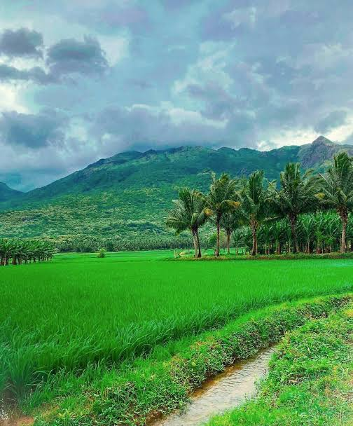

From Our Fields to Your Family
Discover fresh produce from farmers and connect directly with the people who grow your food.
Explore Produce →Search for the fruits and vegetables you need, compare available farmers, and connect directly with them.
Grown with care, shared directly
One direct connection

Discover fresh produce from farmers and connect directly with the people who grow your food.
Explore Produce →Explore some of the produce currently available from farmers.
Making it easier for people who have produce to connect with people who need it.
Show your available produce, update quantities and connect directly with potential buyers.
Search what you need, compare available farmers and contact them directly.
Compare quantity, expected price, location and recently updated availability.
Find suitable produce for both small household needs and larger requirements.
Farm2Connect helps you find the right connection.